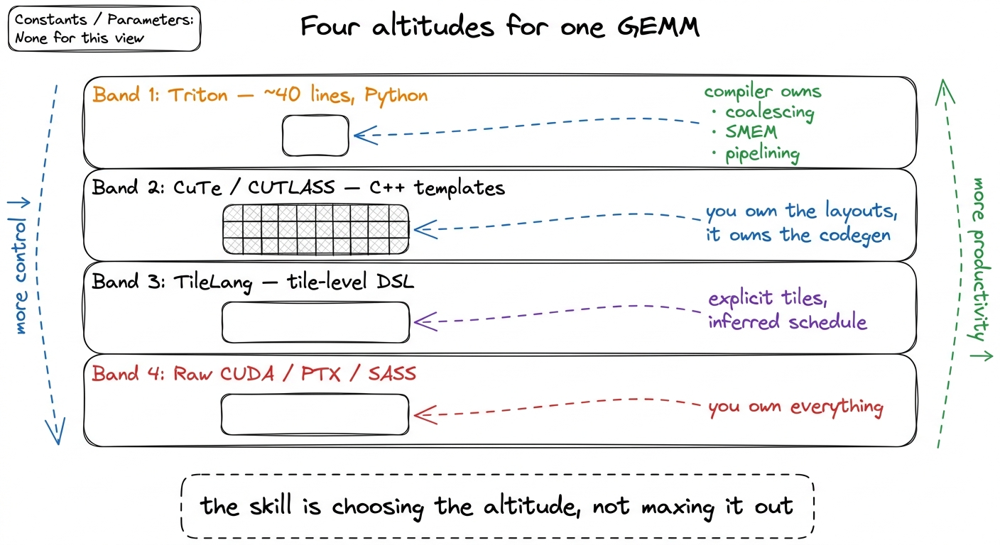
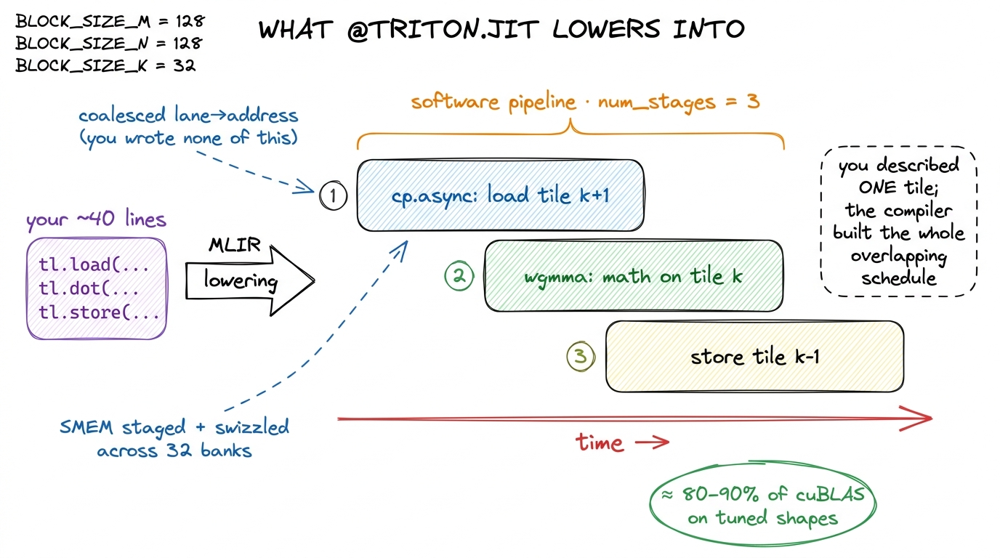
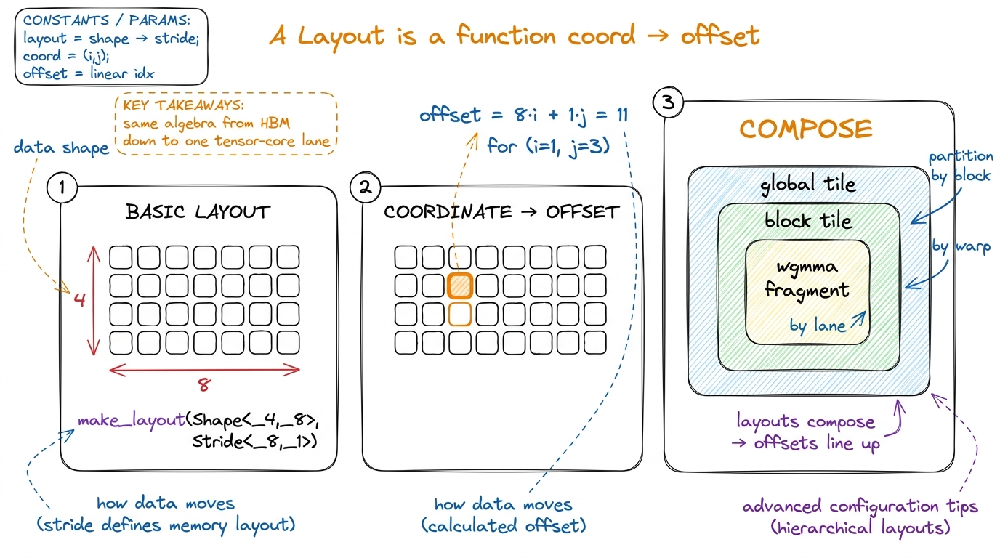
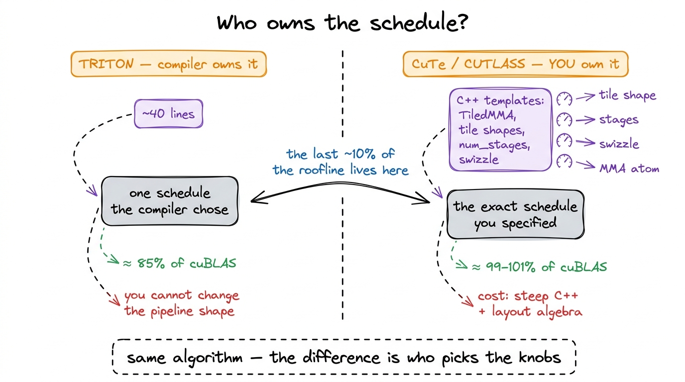
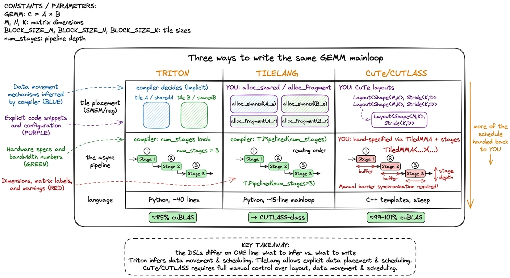
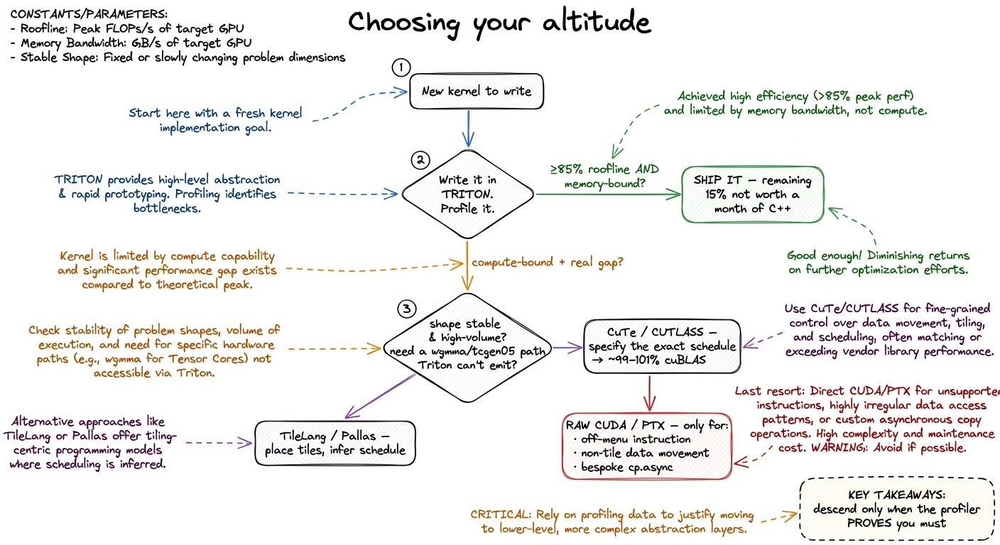

CuTe, the DSL landscape & Triton
Let me start with the thing nobody tells you when you first learn to write GPU kernels: the code you write to learn the machine is not the code you ship. These are two different crafts, and confusing them is one of the most expensive mistakes a new kernel engineer can make.
Here is what I mean. By the end of the GEMM ladder we hand-wrote our way from 1.3% of cuBLAS to 93.7%, and every rung was a real thing we typed with our own fingers: a swizzle to dodge bank conflicts in shared memory, a float4 vectorized load, a warptile loop we unrolled by hand. That climb is the right way to learn the hardware. You nail every parameter to the wall, read the profiler, and feel exactly where the bytes and the cycles go. There is no substitute for it.
But that same kernel is a ruinous way to ship a library. It is a few hundred lines of CUDA that works for exactly one tile shape, one dtype, one architecture. Change the M×N×K, and the tuning is wrong. Move from Hopper's wgmma instruction to Blackwell's tcgen05, and most of the file has to be rewritten from scratch. NVIDIA's own cuBLAS doesn't ship a kernel like ours — it ships something that can generate the right kernel for whatever shape and chip you throw at it. Every serious kernel author faces the same fork, and it comes down to one question.
The question this article answers: once you know how to hand-write a fast kernel, which abstraction do you actually build on top of — and what does each one cost you?
Because you have a choice of altitude. You can write a GPU kernel at four very different levels of abstraction, and picking the wrong one is its own kind of performance bug. Too high, and you leave 30–40% of the chip on the floor because the compiler couldn't express the trick you needed. Too low, and you burn a month of C++ re-deriving something a compiler would have handed you for free. This article is a map of those four altitudes — Triton at the top, the layout algebra of CuTe/CUTLASS below it, a newer tile-level DSL called TileLang in between, and raw CUDA at the bottom — and a decision procedure for choosing between them.
Let me draw the ladder first, so we have one picture to hang everything on.

figure rendering · The four altitudes. Every kernel you ship lives on exactly one of thesKeep this ladder in your head. Everything below is a walk down it, one rung at a time, asking at each step: what did this abstraction decide to hide from me, and is hiding that thing costing me performance? That single question — what is hidden, and does it hurt — is the whole job. We'll come back to it at every altitude.
What does "the compiler owns the schedule" even mean?
Before we climb down, I want to make one phrase concrete, because I'm going to use it constantly and it sounds like hand-waving until you pin it down. I'll keep saying an abstraction "owns the schedule." What is the schedule?
When our hand-written warptile kernel runs, a whole sequence of decisions has already been baked in: which of the 32 threads in a warp reads which byte of global memory (so the reads coalesce into wide transactions), which tile gets staged into shared memory and with what swizzle (so the reads don't collide on the 32 banks), and — the subtle one — when the next tile's global load is fired relative to this tile's tensor-core math, so the two overlap and the math units never sit idle waiting for HBM. That bundle of decisions — thread-to-data mapping, memory staging, and the overlap timing — is the schedule.
In our hand-CUDA, we wrote every bit of it. The whole point of the abstractions above is that they write some or all of it for you. So "the compiler owns the schedule" means: you describe what to compute, and the compiler decides how the threads cooperate and when the loads fire. That is a huge amount of leverage — and, as we'll see, occasionally a cage.
Triton: forty lines, and a compiler that has read the roofline
Start at the top of the ladder, because it is where most people should start most of the time.
Triton is a Python-embedded DSL from OpenAI. You write a kernel that operates on blocks of a tensor, decorate it with @triton.jit, and a compiler lowers it — through an MLIR-based pipeline — all the way down to PTX and then SASS. The thing that makes Triton feel different from CUDA is the unit of thought. In CUDA you think about one thread: what does threadIdx.x do? In Triton you never write threadIdx.x at all. You think about one program instance operating on a BLOCK_M × BLOCK_N slab of data, and the compiler figures out how the 32 threads of a warp cooperate to make that slab move.
Let me show you why that matters with the smallest possible example. Here is a fused softmax. In raw CUDA, a numerically-stable softmax is a genuinely fiddly two-pass reduction: you find the row max, subtract it for stability, exponentiate, sum, divide — with shared-memory scratch and __syncthreads() between the passes. (We build exactly this by hand in softmax from scratch.) In Triton it collapses to this:
@triton.jit
def softmax_kernel(out_ptr, in_ptr, n_cols, BLOCK: tl.constexpr):
row = tl.program_id(0) # one instance owns one row
cols = tl.arange(0, BLOCK)
ptrs = in_ptr + row * n_cols + cols
x = tl.load(ptrs, mask=cols < n_cols, other=-float('inf'))
x = x - tl.max(x, axis=0) # numerically stable
num = tl.exp(x)
y = num / tl.sum(num, axis=0)
tl.store(out_ptr + row * n_cols + cols, y, mask=cols < n_cols)That is the whole kernel. Read it as English: one program instance owns one row, loads the row, subtracts the max, exponentiates, divides by the sum, stores. The two reductions — tl.max and tl.sum — are tile reductions. You did not declare any shared memory. You did not write a single __syncthreads(). You did not do any bank-conflict bookkeeping. The compiler realizes those reductions as a warp-shuffle tree under the hood, and it staged whatever it needed to stage. A tiled matmul is similarly compact: the canonical Triton GEMM is on the order of 40 lines, against the few hundred of our hand-tuned warptile kernel.
And here is the part that surprised me the first time I measured it: this is not a toy that's fast-to-write and slow-to-run. Triton GEMMs and fused-attention kernels routinely land in the 80–90% of cuBLAS / FlashAttention range on the shapes they're tuned for. Think about what that means on the ladder. Forty lines of Python gets you most of the climb we spent eight kernels on, for a tenth of the code. The natural reaction is suspicion — surely there's a catch — and there is, but let's first be honest about how much you get for free.
What is the compiler actually doing for you?
Three of the exact things we sweated by hand across the ladder, Triton does as lowering decisions — choices the compiler makes while translating your Python down to SASS.
- Coalescing. When you
tl.loada contiguous tile, the compiler assigns lanes to addresses so that the 32 threads of a warp read 32 adjacent words and the hardware fuses them into wide memory transactions. Remember kernel 2 of the ladder, where one line reassigning themandnindices quadrupled throughput? You never write that line in Triton. It's a lowering decision the compiler makes for you. - Shared memory. Tiles that get reused are staged into SMEM automatically, and the compiler picks a swizzle to avoid bank conflicts across the 32 banks. You declared none of it. In the softmax above there is no
tl.alloc_sharedbecause there is no shared memory in your source — the compiler decides whether the reduction even needs it. - Pipelining. This is the big one. With a
num_stagesknob, the compiler builds a software pipeline ofcp.asyncloads that overlaps the next tile's global fetch with this tile's tensor-core math. The double-buffering ring we assembled painfully by hand becomes a single integer argument.1num_stagesandnum_warpsare Triton's two big autotuning axes.@triton.autotunesweeps them at first launch and caches the winner. That caching is why the same Triton source can land near-peak on both an A100 and an H100 without a single edit — the tuner re-picks the stage count and warp count for each chip's SMEM budget and math throughput.
Let me draw what those forty lines actually become, because seeing the lowering is what makes Triton click.

figure rendering · What the Triton compiler hands you. Forty lines of Python lower into tSo why isn't every kernel a Triton kernel?
Here is the natural next question, and it's the right one to be suspicious about: if Triton gets you to 85% for a tenth of the effort, why does anyone write anything else?
Because — go back to our one question — the compiler owns the schedule, and there are schedules it will not find. The abstraction that saves you from writing the schedule also prevents you from writing an arbitrary schedule. You get a good pipeline. You do not get to specify this exact pipeline.
Concretely, the compiler's tile abstraction has three floors you can hit:
First, it's always one architecture behind the metal. Hopper's wgmma and its TMA descriptor engine, Blackwell's tcgen05 and Tensor Memory — each of these needs bespoke lowering support that someone has to teach the compiler, instruction by instruction. When a new chip ships, the hand-CUDA folks can reach the new instruction on day one; the DSL reaches it a few releases later.2 This gap genuinely closes with every release — recent Triton has real Hopper TMA and wgmma support, and it's improving fast. But the lag is structural, not a bug: a compiler can only emit an instruction after a human has written the lowering pass for it, so the abstraction is always trailing the newest hardware path by some months.
Second, the tile abstraction itself has a shape. Triton reasons about rectangular tiles with a compiler-inferable schedule. If your problem's optimal data movement doesn't decompose into rectangular tiles — an irregular gather, a sparse pattern, a bespoke index cache — Triton can't express the good version at all, only a rectangular approximation of it.
Third, and this is the one the research community keeps bumping into: sometimes the last 15% lives in a trick the tile abstraction hides. The Stanford CRFM group, generating fast kernels with LLMs, deliberately worked "in pure CUDA-C without using libraries and DSLs such as CUTLASS and Triton" precisely so they could express things the tile abstraction papers over — a hand-shaped cp.async double-buffer pipeline, half2-vectorized shared-memory writes, precomputed index caches held in SMEM. On an L40S their generated FP32 matmul hit 101% of PyTorch and their LayerNorm an eye-watering 484% — but their FP16 matmul landed at only 52% and a FlashAttention kernel at 9%, which tells you the raw-CUDA freedom is a double-edged sword: it lets you reach tricks a DSL can't, and it lets you fall off a cliff a DSL would have kept you away from.3 Those CRFM numbers are on an L40S, not an H100 — worth stating because the ratios don't transfer across chips. The point survives regardless: the same "pure CUDA-C, no DSL" freedom that produced a 484% LayerNorm produced a 9% FlashAttention. Freedom is not the same as performance. See the CRFM experiments for the full worklog.
So: Triton first, always. But when the profiler says the tensor cores are stalling on a pipeline the compiler under-scheduled, we drop an altitude.
CuTe: the layout algebra underneath CUTLASS
Drop one rung. CUTLASS (CUDA Templates for Linear Algebra Subroutines) is NVIDIA's open-source C++ template library for GEMM and its relatives. It is, in effect, the readable source of the tricks cuBLAS keeps closed — the same four-level tiling as our ladder, with the knobs pulled out into template parameters. And since CUTLASS 3.x, the thing every kernel is built out of is CuTe (a stylization of "CUDA Tensors"),4 Don't confuse CuTe with CTA. CTA — Cooperative Thread Arrays — is NVIDIA's formal name for a thread block, the group of threads that share an SM's shared memory. CuTe is the layout algebra CUTLASS 3.x is built on. Similar-looking acronyms, completely different things: one is a hardware execution group, the other is a piece of C++ math for describing where data lives. a small algebra of Layouts and Tensors.
If you take one idea from this whole article, take this one: CuTe turns "how is this data arranged, and who touches which part" from ad-hoc index arithmetic into a composable algebra. That sentence sounds abstract, so let me build it from a tiny by-hand example, because that's the only way it becomes real.
A Layout is a function from coordinates to an offset
A Layout is a pair: a Shape and a Stride. And a Layout is a function — it maps a logical coordinate to a single linear memory offset. That's the entire idea. Let's do the smallest case by hand.
Take a row-major 4 × 8 tile. In CuTe you'd write its layout as make_layout(make_shape(4,8), make_stride(8,1)). The shape says "4 rows, 8 columns." The stride says "to move one row, jump 8 elements; to move one column, jump 1 element." So the offset function is:
offset(i, j) = 8*i + 1*jLet's evaluate it. The element at coordinate (1, 3) — row 1, column 3 — lives at offset 8*1 + 1*3 = 11. Count it out on a flat array: row 0 is offsets 0–7, so row 1 starts at 8, and column 3 of row 1 is 8+3 = 11. It checks. That's the whole mechanism — a Layout is nothing more mysterious than that little dot-product between the coordinate and the stride.
A Tensor, then, is just a Layout plus a pointer: make_tensor(ptr, layout). Indexing a Tensor runs the layout's offset function and adds it to the pointer. Data, plus a rule for where each coordinate lives. Nothing more.

figure rendering · CuTe in one picture. A layout is a coordinate-to-offset function you cWhy "composable" is the word that matters
Here's the payoff, and it's worth slowing down for. Layouts compose. You can take a global tensor, partition it across thread blocks with one layout, then partition each block's chunk across warps with another, then partition each warp's chunk across the individual lanes that feed one wgmma instruction — and CuTe's algebra guarantees, at every level, that the offsets line up. You never re-derive index arithmetic. You compose layouts and the coordinates stay consistent by construction.
And the shapes can be nested — a single entry of a shape can itself be a (shape, stride) pair.5 This hierarchical nesting is the real magic and the real difficulty. It's how CuTe expresses a swizzled shared-memory tile, or the genuinely bizarre register-fragment layout that a tensor-core instruction demands, as one algebraic object instead of a page of hand-derived, error-prone index math. It's also why the learning curve is a cliff: you're not learning an API, you're learning an algebra, and nested layouts don't read like normal code the first fifty times. That is how CuTe writes down the exact register layout a wgmma wants — a layout so contorted that deriving it by hand is where most people's hand-written tensor-core kernels have their bugs.
CUTLASS then stacks these layouts into a collective → kernel → device hierarchy that mirrors the thread-block cluster → block → warp structure of the hardware. A TiledMMA object wraps the actual tensor-core instruction — a Hopper wgmma.mma_async on an sm_90a build, say — and it carries the exact register-fragment layouts that instruction expects. So when you feed a TiledMMA your CuTe tensors, it literally cannot be miswired: the layout algebra makes the mismatch a compile error rather than a silent garbage result. In the 3.x API you assemble a kernel from a CollectiveBuilder (the mainloop) plus an epilogue, hand it the tile shapes and a TiledMMA, and CUTLASS generates the pipelined, TMA-fed, bank-conflict-free mainloop we spent ten kernels approximating.6 There's a warning worth internalizing from Kapil Sharma's "Learn CUTLASS the hard way": "the problem with looking at something like CUTLASS without knowing all the basics is that you will understand the code but not what it is doing under the hood." This is exactly why the ladder comes first. CuTe reads as inscrutable template soup until you've hand-derived the layouts it's automating — then it reads as relief.
The trade against Triton, stated plainly
Let me make the trade exact, because it's the crux of the whole ladder. Triton owns the schedule and you accept whatever it picks. CuTe hands the schedule back to you. You choose the tile shapes, the number of pipeline stages, the swizzle pattern, the MMA atom. You get all the control we lost by going high — but you pay for it in dense C++ template machinery and a genuinely steep learning curve, the cliff the sidenote above is about.
And that control is exactly the last ten points of the roofline. A well-written CUTLASS kernel can match cuBLAS — often within a percent or two, sometimes past it on shapes cuBLAS never specialized for — precisely where a Triton kernel tends to plateau in the high 80s. You didn't buy those points with cleverness. You bought them with layout algebra: the ability to specify the one schedule the tile compiler wouldn't find.

figure rendering · The core trade. Triton picks one good schedule and hides the knobs; CuTileLang: you place the tiles, the compiler infers the schedule
We've now seen the two ends. Triton: the compiler owns everything about the schedule, including where the tiles live in the memory hierarchy. CuTe: you own everything, in C++. The natural question — and a whole crop of research is racing to answer it — is whether there's a useful middle. What if you kept control of the one decision that matters most and let the compiler infer the rest?
TileLang is one bet on where that split should be. It's a Python tile-level DSL in the lineage of Apache TVM. You write the kernel as explicit operations on named tiles — allocate a shared-memory tile, copy a global slice into it, gemm two tiles into an accumulator — but the schedule (thread binding, the async pipeline, the low-level layout inference) is filled in by the compiler and exposed as tunable annotations. Here's a matmul mainloop:
@T.prim_func
def matmul(A, B, C):
with T.Kernel(N // BN, M // BM, threads=128) as (bx, by):
As = T.alloc_shared((BM, BK), "float16") # YOU name + place this
Bs = T.alloc_shared((BK, BN), "float16") # YOU name + place this
Cl = T.alloc_fragment((BM, BN), "float32") # register accumulator
T.clear(Cl)
for k in T.Pipelined(K // BK, num_stages=3): # compiler FILLS the pipeline
T.copy(A[by*BM, k*BK], As) # global → SMEM
T.copy(B[k*BK, bx*BN], Bs)
T.gemm(As, Bs, Cl) # SMEM → tensor cores
T.copy(Cl, C[by*BM, bx*BN])Look carefully at the altitude, because it's the whole point of TileLang. The shared-memory tiles As and Bs are named and allocated by you, with alloc_shared. That is lower than Triton, where shared memory is entirely implicit and you never name it. But T.Pipelined(..., num_stages=3) asks the compiler to build the async double-buffered pipeline — that is higher than the hand-rolled cp.async ring buffer of a raw kernel. It's the same double-buffering idea from the ladder, but expressed as intent ("pipeline this loop, 3 stages deep") rather than mechanism (the actual ring-buffer bookkeeping).
So TileLang's bet is precise and it's the opposite of Triton's: tile placement is the thing worth writing by hand, and scheduling is the thing worth inferring. Triton infers both; TileLang says the placement — which tile lives in SMEM, which in registers — is where the human judgment pays off, and hands scheduling to the compiler. In practice it aims to reach CUTLASS-class numbers on GEMM and attention with a fraction of CUTLASS's code.
Let me lay the three altitudes side by side on exactly this decision — who decides where each tile lives, and who decides when the loads fire — because seeing them in one frame is what makes the middle rung legible.

figure rendering · The middle rung made concrete. Triton infers placement *and* schedule;This middle band is churning fast, and it's worth knowing the landscape isn't settled.7 TileLang, Mosaic/Pallas (JAX's kernel DSL), ThunderKittens (Stanford's tile-primitives library), Hidet, and CuTe DSL's own new Python frontend are all circling the same target: CUTLASS-class performance without CUTLASS's C++. None has clearly won. The line they differentiate on is exactly the "infer vs. specify" boundary in the figure above — how much of tile placement and scheduling the author writes versus the compiler infers. If you're picking one today, pick on which of your decisions you most want to keep by hand.
The decision procedure: when to drop to raw CUDA
So we have four altitudes, more control as you descend, more productivity as you climb. The obvious final question: given a real kernel to write on Monday morning, how do you actually choose? The answer is short, and it's the same predict-then-measure loop from the three regimes — you never guess the altitude, you profile your way down to it.
Start high. Always. Write the Triton kernel first. Forty lines, autotuned. For the large majority of shapes it will land within a few percent of the best kernel you could hand-write. And critically — if your op is memory-bound (a fusion, a normalization, an activation; the whole world operator fusion lives in), then "within a few percent of peak" is all the win there is. A memory-bound kernel is limited by HBM bandwidth, not by how cleverly you schedule the math, so a good-enough schedule is a done kernel. Profile it in Nsight Compute. If you're at 85% of the roofline and on the memory-bound side, stop. The remaining 15% is not worth a month of C++, and often isn't even reachable.
Drop to CuTe / CUTLASS when three things are all true: you're compute-bound (the tensor cores are the bottleneck, not the memory pipe), the shape is stable and high-volume (you'll run this exact GEMM billions of times, so amortizing the C++ effort makes sense), and the profiler shows Triton leaving a real gap — tensor cores stalling on a pipeline the compiler under-scheduled, or a wgmma/tcgen05 path the DSL doesn't emit yet. This is where the layout algebra earns its keep: you specify the exact schedule and reclaim the last few points against cuBLAS. This is the altitude the biggest production kernels live at — much of what's inside cuBLAS, and the specialized GEMMs in DeepSeek's DeepGEMM, are CUTLASS-shaped for exactly this reason.
Reach for TileLang (or Pallas, or ThunderKittens) when you want CuTe-like control over where the tiles live without paying the C++ tax, and your kernel's data movement is tile-shaped enough for the compiler's scheduler to do a good job on the timing.
Drop to raw CUDA / PTX only for the genuinely off-menu: an instruction no DSL exposes yet, a data-movement pattern that isn't rectangular tiles at all, a bespoke cp.async choreography — exactly the territory the CRFM kernels staked out on purpose when they went "pure CUDA-C." This is the rung where the ladder's hand-skills finally pay off directly: you can only tell a compiler is leaving performance on the floor if you know, from having done it yourself, what the floor looks like.

figure rendering · The whole decision as one flowchart. Start in Triton, profile, and desWhy we hand-wrote all ten kernels anyway
Let me close by answering the question that's probably been nagging you if you climbed the whole GEMM ladder with me: if you almost never ship hand-written CUDA, why did we spend ten articles hand-writing it?
Here's the honest answer, and it's the thesis of this entire book. Every abstraction above raw CUDA is a bet about what to hide. Triton bets you don't need to see the threads, and hides them. CuTe bets you don't need to hand-derive the index arithmetic, and hides it behind a layout algebra. TileLang bets you don't need to write the schedule, and hides it behind T.Pipelined. Each bet is usually right — that's why these tools exist and why you should reach for them first.
But every bet is sometimes wrong, and when it's wrong it costs you a specific, measurable chunk of the chip — 10% of the H100 sitting in front of you, tensor cores idling on a pipeline the compiler under-scheduled. And here's the thing you cannot get around: you cannot evaluate a bet about what to hide unless you have seen the thing it's hiding. You can't look at a Triton kernel plateaued at 85% and know whether the missing 15% is a fundamental memory-bound wall (ship it) or a schedule the compiler botched (drop to CuTe) — unless you have hand-written that schedule yourself and know what a good one looks like.
That's the real reason for the ladder. Not because you should ship hand-written CUDA — you almost never should. But because knowing which hidden thing is costing you performance on the specific chip in front of you is the whole job of a kernel engineer. The abstractions handle the common case. You handle the case where the abstraction was wrong. And you can only recognize that case if you've been all the way down to the SASS at least once, on purpose, with your own two hands.
Start high. Profile. Descend only when the numbers make you. And know the floor well enough to recognize it when a compiler leaves you standing on it.